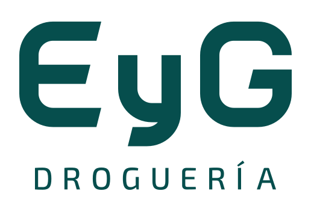

Primero, te escuchamos.
Contanos qué necesitás y dónde está tu farmacia o institución. Con esa información, podemos orientarte desde el primer contacto.
Droguería en Rosario · Santa Fe
Medicamentos, insumos y descartables.
Un equipo que te acompaña y herramientas que hacen más simple tu compra.
Detrás de cada pedido,
una relación de confianza.
01 / A quiénes acompañamos
Cada compra tiene un contexto. Queremos conocer el tuyo.
Tu farmacia, a tu manera
Consultá los productos disponibles, compará condiciones y encontrá opciones de compra para tu farmacia. Con tu asesor comercial como persona de referencia.
Consultá las presentaciones y unidades de venta disponibles para cada producto.
Revisá precios, cantidades y condiciones antes de armar tu pedido.
Hablá con tu asesor para resolver consultas y acompañar el seguimiento de tu compra.
Instituciones de salud
Medicamentos, insumos médicos y descartables para las necesidades de tu institución. Un contacto comercial para consultar productos y condiciones.
Compartí el producto, la presentación y la cantidad que necesitás.
Consultá disponibilidad, documentación y condiciones con el equipo comercial.
Acordá los detalles de entrega y consultá por tu pedido a través del asesor.
02 / Portal EyG
Consultá productos, revisá tus condiciones y armá tu pedido. Si necesitás ayuda, tu asesor comercial sigue cerca.
Ingresar al portal (abre en otra pestaña)Necesito ayuda con mi acceso →Accedé con los datos de tu farmacia o institución.
Revisá productos, presentaciones y condiciones.
Elegí las cantidades y revisá tu compra antes de confirmarla.
03 / Cómo trabajamos
Elegí cómo consultar. Encontrá a quién recurrir.
Nuestra forma de estar cerca
Escuchar.
Resolver.
Acompañar.
Contanos qué necesitás y dónde está tu farmacia o institución. Con esa información, podemos orientarte desde el primer contacto.
Portal EyG o consulta por WhatsApp. Herramientas distintas, con el acompañamiento del equipo comercial.
Tu asesor acompaña las consultas sobre pedidos. Para pagos y comprobantes, tenés un canal directo con cada área.
04 / Somos EyG
Desde 2019 acompañamos a farmacias e instituciones de salud con medicamentos, insumos médicos y descartables.
Creemos en una atención que conoce a quien está del otro lado. En hacer las cosas más simples. En construir, pedido a pedido, una relación de confianza.

El respaldoContactá al equipo de Ventas por WhatsApp o correo. Contanos el nombre de tu farmacia o institución y la localidad. El equipo comercial te orientará sobre el alta, la documentación y las condiciones correspondientes.
Si ya tenés cuenta, ingresá al Portal EyG (abre en otra pestaña) para consultar tus precios y disponibilidad. También podés hablar con tu asesor. Revisá la presentación y la cantidad antes de confirmar la compra.
Las opciones de fraccionado dependen del producto y su unidad de venta. Consultá la presentación, el mínimo y las condiciones con tu asesor antes de confirmar el pedido.
Compartinos tu localidad y el tipo de establecimiento. El equipo comercial te confirmará la cobertura y las condiciones de entrega para tu caso.
Contactá a tu asesor comercial o escribí a Ventas. Para facilitar la consulta, tené a mano el nombre del establecimiento y la referencia del pedido.
Contactá a Cobranzas para pagos y cuenta corriente. Para facturas, notas de crédito o datos fiscales, comunicate con Facturación.
06 / Conversemos
Una consulta comercial. Un pedido. Un tema administrativo.
Te ayudamos a encontrar el canal indicado.
Equipo comercial
Contanos el nombre de tu farmacia y la localidad. Podés iniciar la consulta por WhatsApp o correo; el equipo comercial te orientará sobre los próximos pasos.
Conversar por WhatsApp ventas@drogueriaeyg.com.arAtención del equipo: lunes a viernes, de 8 a 17 h.
El botón abre WhatsApp con un mensaje inicial. Vos lo revisás y decidís enviarlo.
También podés ir directo
Consultas, altas y pedidos
Pagos y cuenta corriente
Comprobantes y datos fiscales